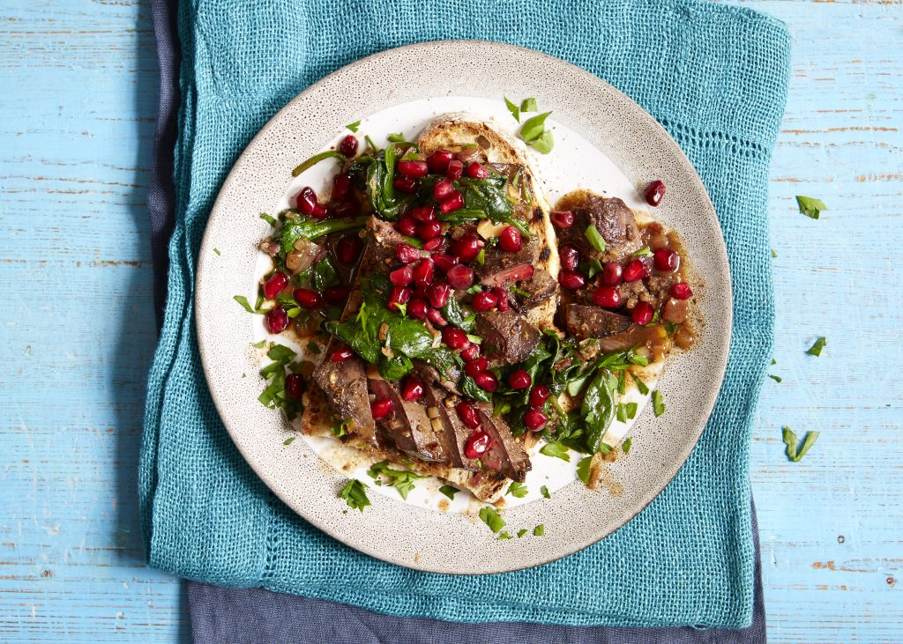

JANUARY

The parties are over, we’re all carrying a little extra Christmas weight, so time to get healthy. Oranges and lemons are coming into season, root veg like parsnips and swedes are in abundance, and salmon makes its seasonal debut.
Fruit
Apples (Bramley)
Cranberries (coming into season)
Lemons (coming into season)
Oranges (coming into season)
Pears
Pomegranate
Vegetables
Beetroot
Brussel sprouts
Cauliflower
Kale
Leeks
Parsnips
Potatoes (maincrop)
Rhubarb (coming into season)
Meat
Turkey
Duck (end of season)
Fish and seafood
Mussels
Salmon (coming into season)